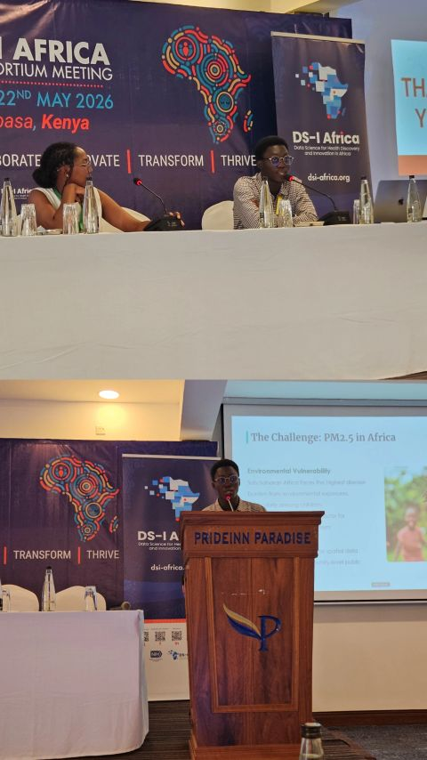
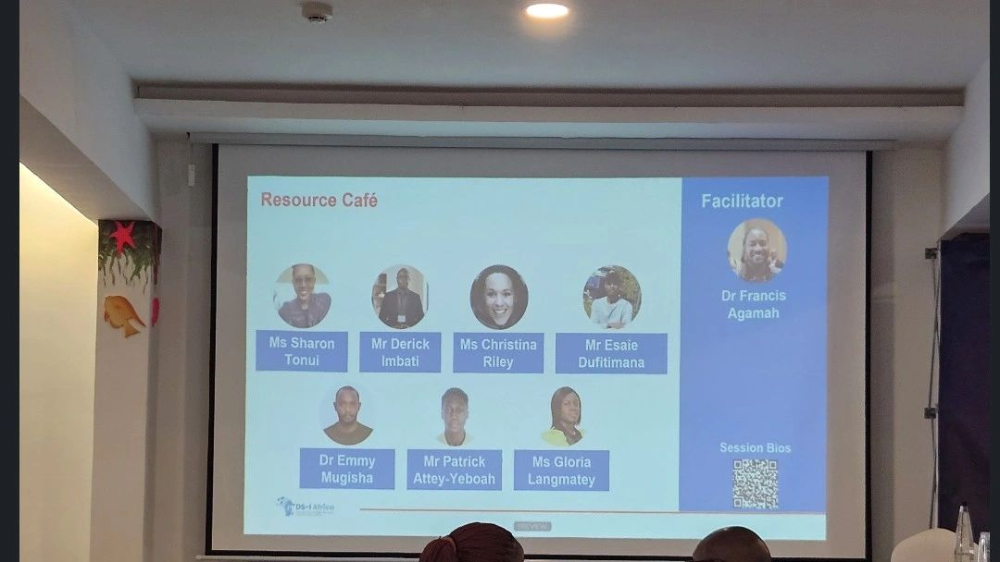
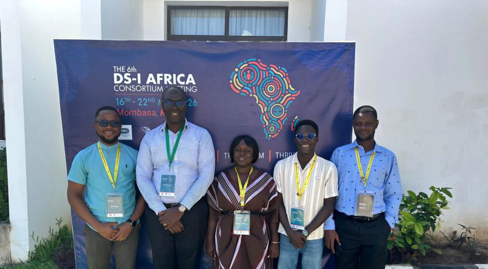
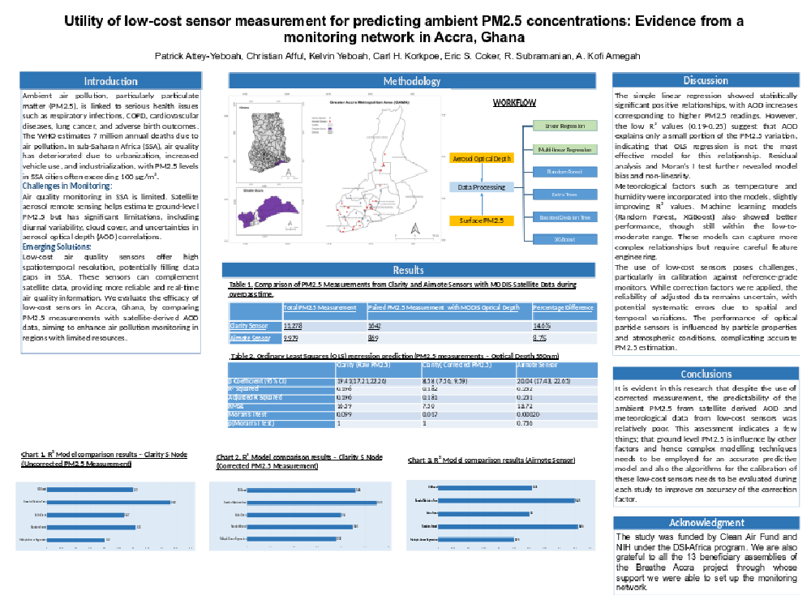
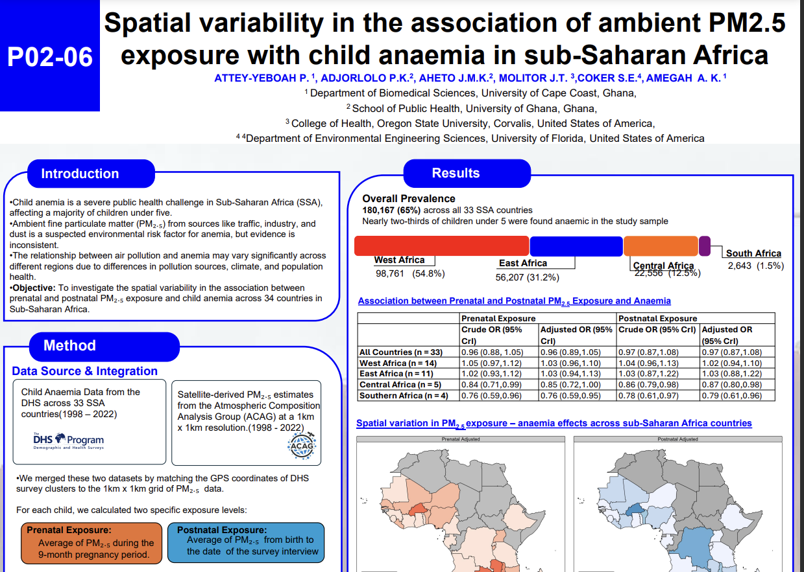
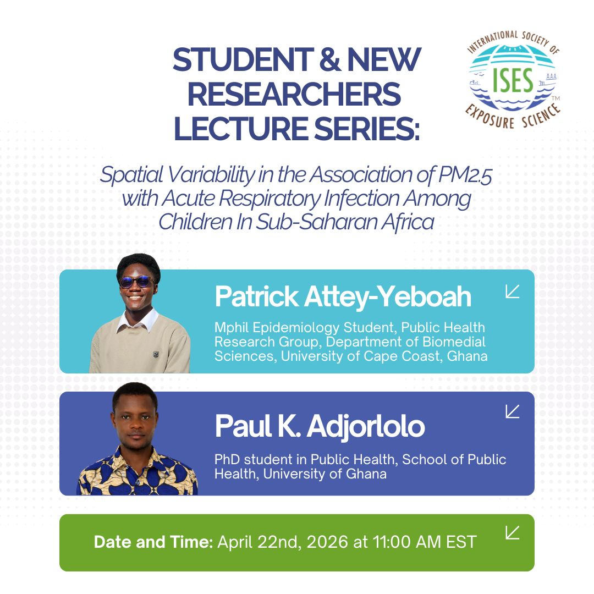
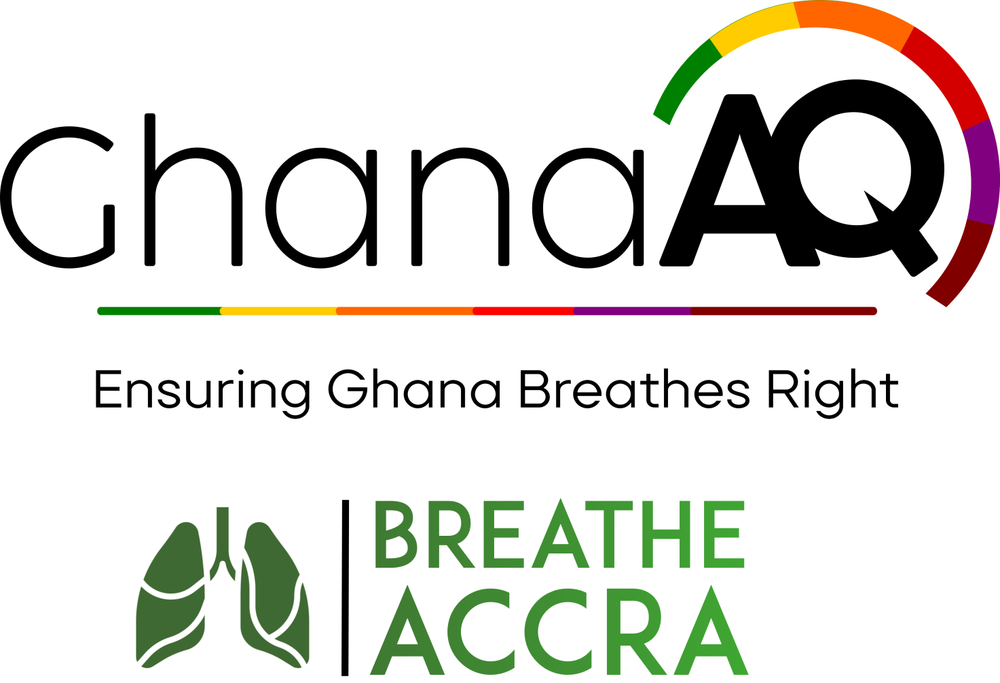

Patrick
Attey-Yeboah
Environmental Epidemiologist & Data Scientist
I am an MPhil Epidemiology student in the Biomedical Sciences Department at the University of Cape Coast, working under the DICE Project within the NIH DS-I Africa consortium led by Prof. Kofi Amegah. My work sits at the intersection of environmental epidemiology, spatial statistics, and child health in Sub-Saharan Africa.
Within the DICE Project, I contribute to research examining the spatial variability in the health impacts of ambient PM2.5 exposure across SSA, including the modifying roles of neighbourhood greenness and nutrition. I am also involved in developing multi-temporal exposure models by integrating land use regression approaches with ground and mobile monitoring data.
Methodologically, I apply machine learning-based Land Use Regression models and Bayesian spatial techniques to investigate how air pollution influences child undernutrition and respiratory outcomes. On the applied side, I lead data management and support sensor network operations for the GhanaAQ and Breathe Accra projects, which monitor urban air quality across 13 districts in Greater Accra.
Open To
Selected Works
Publications
* denotes first or co-first author.
Peer-Reviewed Journal Articles
Consumption of antioxidant-rich foods attenuates respiratory and cardiovascular health effects in a population highly exposed to air pollution
Amegah, A. K., Yeboah, K., Quarshie, E., Benjamin, D. O., Amonoo, P., Attey-Yeboah, P., ... & Kandala, N. B.
Environmental Epidemiology, 2026
View DOISpatial variability in the association of ambient PM2.5 exposure with acute respiratory infection among children in Sub-Saharan Africa
Adjorlolo, P. K., Attey-Yeboah, P.*, Molitor, J., Coker, E. S., Aheto, J. M., & Amegah, A. K.
Environmental Research, 2026
View on ScienceDirectSpatial variability in the association of ambient PM2.5 exposure with child undernutrition in sub-Saharan Africa
Attey-Yeboah, P.*, Adjorlolo, P. K., Aheto, J. M. K., Molitor, J., Coker, E. S., & Amegah, A. K.
Environment International, 2025
View on ScienceDirectUtility of low-cost sensor measurement for predicting ambient PM2.5 concentrations: evidence from a monitoring network in Accra, Ghana
Attey-Yeboah, P.*, Afful, C., Yeboah, K., Korkpoe, C. H., Coker, E. S., Subramanian, R., & Amegah, A. K.
Environmental Science: Atmospheres, 2025
View on RSCUnder Review
Utility of low-cost sensor data for air pollution source apportionment: Evidence from a major sub-Saharan African city
Attey-Yeboah, P.*, Afful, C., Yeboah, K., Coker, E. S., & Amegah, A. K.
Posters, Presentations & Webinars



Contributions to the “Data Science for Maternal, Child & Environmental Health” track
Resource Café
Co-presented “DICE – Air Quality App (GhanaAQ App)” with Gloria Langmatey, demonstrating the Ghana Urban Air Quality application developed under the DICE Project.
Poster Session
Presented a poster on spatial variability in ambient PM₂.₅ exposure effects on child undernutrition across Sub-Saharan Africa and the moderating role of green spaces.



Utility of low-cost sensor measurement for predicting ambient PM2.5
Presented research on the development of high-resolution exposure models for Accra, Ghana. The work focused on the calibration and validation of low-cost sensors using machine learning techniques to account for environmental factors, bridging the data gap in Sub-Saharan African urban environments.



Spatial variability of ambient PM2.5 and child anemia in SSA
A multi-country study examining the association between prenatal air pollution exposure and childhood health outcomes. By integrating satellite-derived PM2.5 data with DHS survey results, we identified critical spatial variations in health risk across African nations, informing targeted public health interventions.

Spatial Variability in the Association of PM2.5 with Acute Respiratory Infection Among Children In Sub-Saharan Africa
View LinkedIn PostFocus Areas
Research
Air Quality Monitoring
Developing high-resolution exposure models using low-cost sensors and machine learning across data-sparse African urban environments.
Child Health Outcomes
Quantifying the links between prenatal PM2.5 exposure and childhood anemia, stunting, wasting, and respiratory outcomes across SSA.
Spatial Epidemiology
Applying Bayesian hierarchical spatial models — BYM/BYM2 via R-INLA — to map disease risk and identify geographically varying health determinants.
Skills & Methods
Air Quality Modeling
I calibrate low-cost sensors using machine learning — random forest and gradient boosting — to correct for humidity and temperature artifacts and improve PM2.5 and NO2 accuracy in data-sparse African settings. I apply receptor-based source apportionment methods to characterize pollution contributors and translate monitoring data into policy-relevant insights.
Bayesian Spatial & Child Health
I apply BYM models via R-INLA to map disease risk and identify geographically varying associations between environmental exposures and health outcomes. I work extensively with DHS data to study child health outcomes, linking satellite-derived PM2.5 estimates with multilevel models respecting nested multi-country survey designs.
Statistical Programming & GIS
I work primarily in R — using INLA spdep tidyverse sf Shiny — and Python for data pipelines, ML workflows, and API integrations. I integrate satellite-derived data with ground-level sensor measurements using GIS tools for large-scale exposure assessment.
Core Tools & Technologies
Open Source
Tools & Dashboards
Tools built for environmental monitoring, data quality assurance, and public health research.
Clarity Node-S QC Dashboard
An interactive quality control dashboard for the Ghana Urban Air Quality sensor network. Supports CSV upload and direct Clarity API fetching, applies built-in and custom QC flags, merges QC flags with device health signals, and generates downloadable site-level maintenance reports. Includes time-series visualization and spatial sensor-health maps.
Launch DashboardGhanaAQ Air Quality App
The Ghana Urban Air Quality application developed under the DICE Project, surfacing PM2.5 readings from the GhanaAQ and Breathe Accra low-cost sensor network. Co-presented at the 6th DS-I Africa Consortium Meeting Resource Café (Mombasa, 2026).
Featured at DS-I Africa 2026District Rankings Dashboard
A composite scoring dashboard ranking districts across the Breathe Accra and GhanaAQ sensor networks by air-quality indicators, supporting field prioritisation and public-facing reporting across Greater Accra.
Internal ToolTrack Record
Experience & Affiliations
Research Assistant — Amegah Research Group
University of Cape Coast, Ghana
@AmegahLabContributing to the DICE Project — Leveraging Data Science Applications to Improve Children's Environmental Health in Sub-Saharan Africa — under the NIH DS-I Africa consortium. Research activities include spatial epidemiology of PM2.5 and child health outcomes, multi-temporal LUR model development, and data harmonisation across SSA DHS datasets.

Data Manager
Ghana Urban Air Quality & Breathe Accra Project
Leading cleaning, validation, and spatial integration of high-frequency air quality monitoring data from a network of Clarity Node-S low-cost sensors across Accra. Developed QC pipelines and interactive dashboards to support field team decision-making and research outputs.
breatheaccra.org/team →Student Member — ISEE
International Society of Environmental Epidemiology
www.iseepi.orgAcademic Journey
Education
MPhil Epidemiology (Year 2)
University of Cape Coast, Ghana
Thesis: Spatial variability in the association of ambient PM2.5 exposure with child undernutrition in sub-Saharan Africa.
BSc Biomedical Sciences
University of Cape Coast, Ghana
Foundational training providing the biomedical grounding that underpins my approach to environmental health research.
Academic Network
Collaborators & Mentors
Prof. Kofi A. Amegah
University of Cape Coast
Associate Professor of Environmental & Nutritional Epidemiology
Prof. Justice Moses K. Aheto
University of Ghana
Professor of Biostatistics
Get In Touch
Connect & Collaborate
I am always open to discussing research collaborations, data science projects, or speaking opportunities in environmental health.